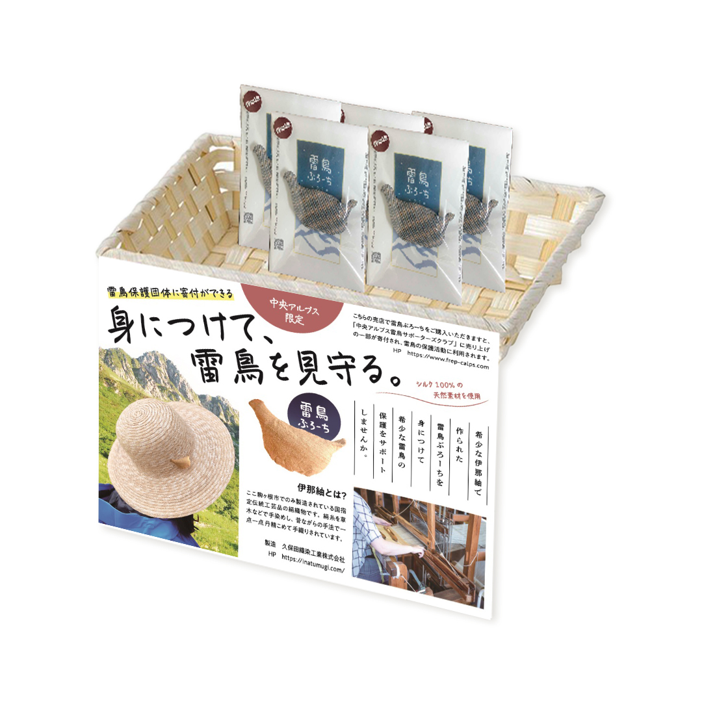

WORKS
実績
イラストエッセイ制作・展示 | ペルー祭り

長野県伊那市のゲストハウスで行われたイベント「ペルー祭り」で展示したイラストエッセイです。
キャンバス地にプリントすることで、味のある展示になりました。ペルーに旅行した時の思い出を、イラストとエッセイ、撮影した写真で綴っています。
日本ではあまり知られていない地方都市でしたので、見る人がどんな土地なのか興味を持ってもらえるように、旅行中の小ネタをふんだんに入れて描きました。
- 制作時間
- 120時間（2022年）
- 01.
- 会場でクライアントと共に展示エリアの確認とイメージの打ち合わせを行う
- 02.
- イメージラフを作成。エッセイの内容にご協力いただくペルーの旅行会社へ、写真提供・監修の依頼
- 03.
- 旅行会社からご提供いただいた情報を元にエッセイを作成、クライアントへの確認
- 04.
- 展示写真の選定と、イラストエッセイの清書
- 05.
- クライアント・旅行会社への確認、印刷会社へ入稿作業を行う
- 06.
- クライアントと展示スケジュールのすり合わせを行う
- 07.
- 搬入と展示、Instagramでの宣伝を行う（個人アカウント）

イラスト・デザイン・アートディレクションを担当しました。
Webサイト•販促物制作 | 久保田織染工業株式会社様

伊那紬織元・久保田織染工業株式会社｜Webサイト
国指定伝統工芸品である伊那紬を製造販売する、老舗織物会社のWebサイトを制作しました。
2020年7月に初公開してから現在まで、サイトの保守管理、SNS更新、内容やデザインの修正を継続的に行ない、より良い内容になるよう日々努めています。
クライアントが希望するワードは、公開半年後から現在までGoogle検索で1位をキープし続けています。
定期的にお問い合わせが来るようになり、サイトを見て訪問するお客様が増えた、とクライアントからは嬉しいお知らせを度々いただいています。
- 制作時間
- 104時間（2020年）
- 01.
- ヒアリングを元にペルソナを設定（60代女性）
- 02.
- PowerPointでサイトマップを作成（現在はFigmaを使用）
- 03.
- AdobeXDでワイヤーフレームを作成（現在はFigmaを使用）
- 04.
- ヒアリング内容、ペルソナを元に取材と撮影を行う（カメラマン同行、撮影の指示を行う）
- 05.
- サイトデザインをAdobeXDで作成（現在はFigmaを使用）、写真編集
- 06.
- クライアントへの確認と修正
- 07.
- コーディング、レスポンシブ対応
- 08.
- 公開。アクセス解析、保守管理、SNSの更新等を行う
簡単なサイトマップを作成し、情報の順番等をクライアントに確認しながら整理しました。
AdobeXDで作成した初期案。実際にコーディングしてからも修正を重ねたので、デザインが現サイトとは異なっています。
スマホでの閲覧が約半数のため、モバイル端末での閲覧時にも見やすいようにリキッドレイアウトを用いています。 初期ターゲット層である60代女性以外にもその子ども世代である30〜40代男女、就職を希望する学生、地元行政の職員などからのお問い合わせが続いたため、PCからもスマホからも見やすく使いやすいサイトを目指しています。
雷鳥ぶろーち販促ポップ、台紙
小物にパッケージを付けて売りたいとご相談頂き、販促ポップと台紙を作成。 地域で活動が盛んな雷鳥の保護活動をサポートする目的で作られた商品でしたので、クライアントと相談の上それを前面に押し出した販促ポップにしました。 発売から2年、定期的に売れ続けており、販促ポップを見て買ったとの声を時々いただいています。
- 制作時間
- 16時間（2021年）
- 01.
- クライアントへ予算の確認と販売イメージのヒアリングを行う
- 02.
- 販売イメージの提案、台紙・包装用の袋の選定と提案
- 03.
- 台紙に使用するイラストの発注、デザインデータへの書き起こし
- 04.
- 品質表示法等の表示義務を確認、クライアントとの共有
- 05.
- 台紙デザインの完成。販促ポップ用の写真撮影（カメラマン同行）
- 06.
- 販促ポップに記載するリンク先の許諾取得とデザインの完成
- 07.
- 印刷とラミネートを行い、納品
成人式フォトスポット制作 | 西箕輪公民館様

長野県伊那市の西箕輪公民館で開催された成人式『伊那市 二十歳のつどい』で使用されたフォトスポットを制作しました。テーマは「自然からの祝福」。豊かな自然と水芭蕉、農場のいちご…と西箕輪という地域から連想されるものを絵に表し、それに幸運の象徴となるような白い鳥を飛ばして、成人してこの地から飛び立つ若者を祝福するイメージです。
イラスト・デザイン・アートディレクションを担当しました。
- 制作時間
- 33時間（2022年）
- 01.
- 展示会場でクライアントとイメージの打ち合わせ、予算、サイズの確認
- 02.
- 管理方法、素材の耐久年数を印刷会社へ確認し、素材の選定とクライアントへの提案を行う
- 03.
- 素材確定後、イラスト・デザインの作成と提案
- 04.
- デザインの完成、入稿作業を行う
- 05.
- 搬入日の打ち合わせ後、納品。展示と管理方法のご説明を行う

設置当日は立ち会いができなかったため、納品時に取り扱い説明書を作成してお渡ししました。設置方法や、素材を劣化させないための保管方法が記載されています。
メインビジュアル｜どうかん山こどもクリニック様

2020年6月、東京で新規開業した小児科「どうかん山こどもクリニック」様のメインビジュアル等を制作しました。繊細な描き込まれたタッチでとのご要望でしたので、ペンにデジタル彩色で描いています。アナログ感がありながらウェブサイト上でも使用できるように考慮した、クライアントと二人三脚で作り上げた思い出深い作品です。ホームページ、看板、電柱広告、封筒、ハンコとさまざまな媒体に合わせてイラストをご用意させていただきました。
イラスト・デザイン・アートディレクションを担当しました。
- 制作時間
- 120時間（2020年）
- 01.
- クライアントとオンラインでの打ち合わせ、イメージの共有と必要なデータ形式の確認
- 02.
- メインビジュアルイラストを作成、提案。イメージが合致するまで修正を繰り返す
- 03.
- メインビジュアルの完成。Webサイト用の挿絵、はんこ、ステッカー、電柱広告用のイラストを作成
- 04.
- ロゴのイメージを追加依頼され、ラフを作成。制作するデザイン会社へクライアントを通してラフを提出
制作アシスタント｜赤ペン添削でわかりやすい!選ばれるデザイナーへの道
書籍の制作に奥越ながら少しだけ関わらせていただきました。イラストを1点、印刷物とバナーの作例を数点担当しました。制作チームのメンバーは現役で活躍されている先輩デザイナーばかり。そんな先輩を全力で追いかけ、デザイン面、精神面で助けていただきながら取り組みました。
作例用イラスト1点・デザインアシスタントを担当しました。
- 制作時間
- イラスト4時間・デザイン1点につき約6時間（2回程度の修正を含める）
飲食店マップ等
パートの勤め先で制作した広告物の一部です。基本は上司がテキスト等内容をまとめ、私は与えられた情報を元に見た目をデザインする流れになっています。 稀に提案の機会に恵まれたときには、その時出来うる限りの意見や資料を揃えて取り組むようにしています。 上層部とお客様両方の立場になって取り組むために上流から関わりたいと日々考えているため、認めていただけるようデザインスキルの向上に励んでいます。
自社サイトの部分的なデザインや、toB、toC向けチラシ・バナーの制作、間取りや地図の制作、管理物件の塗装イメージの制作、写真のレタッチなどをマーケティング課のパートタイムデザイナーとしてチーム一丸となって担当しています。
飲食店マップ
指定エリアにあるテイクアウト可能な飲食店を調査し、イラスト調の地図にまとめました。アイコンイラストは作成し、人物イラストは商用フリーのイラストを使用しています。
- 制作時間
- 12時間
- 01.
- 地図範囲の確認、飲食店の調査
- 02.
- 食品イラストの作成
- 02.
- デザインの作成と修正
Youtube CM
ABOUTページの「デザイナーとしての業務経験」で書いたように、提案から関われた数少ない案件です。
アメコミイラストは手描き感があるほうがいいと先輩からアドバイスいただき、ラフさを残した作りになっています。
社内の誰でも編集できるように、Premier ProではなくPower Pointのアニメーションとスライドを利用してパーツの動く紙芝居形式の動画に仕上げました。
アメコミ風動画は紙芝居なので、動画のリンクはありません。Power Pointでどの程度アニメが作れるのかを知っていただくために、お蔵入りになった動画のリンクを下記に貼ります。
途中で制作が中断したため、音声はラスト1秒以外無しとなっています。
PowerPointで作ったアニメーション動画
- 制作時間
- 48時間
- 01.
- Premier ProとPhotoshopで動画のラフを作成、提案
- 02.
- 動画編集をPower Pointに切り替え、イラストの清書・修正を繰り返す
- 03.
- 収録されたボイスとBGMを動画内に挿入、一部モーションをつける
- 04.
- 内容の修正等を繰り返し、テロップを入れて完成

クチコミカード
来店されたお客様にお配りするカードを制作しました。可愛く親しみやすく、という指示でしたので、イメージキャラクターに合うようにポップで明るく仕上げました。
- 制作時間
- 2時間

抽選会チラシ
ご契約者様限定の抽選会の店内掲示ポスターを制作しました。
社内のルールとして、誰でも修正できるようにテキストをアウトライン化して加工することがほぼ無いのですが、データを工夫して修正しやすくしてあります。
この方法が受け入れられたので、その後も楽しい雰囲気のデザインを指示された際には同じようにテキストで遊ぶようになりました。
- 制作時間
- 4時間
オープンチラシ
新規オープンする物件のチラシを制作しました。上司からの情報を元に、料金等わかりやすくまとめました。
- 制作時間
- 6時間
ロゴデザイン｜茶房ちこのや様
手間暇かけて作られた手料理が美味しいごはん屋さん「茶房ちこのや」様のロゴを制作しました。ロゴマークのモデルは穏やかなお人柄が愛されるオーナーご夫婦です。
- 制作時間
- 21時間
- 01.
- クライアントの店舗にて打ち合わせ、その場でイメージラフの作成
- 02.
- 修正を何度か行い完成、ロゴレギュレーションを作成
- 03.
- 色紙用の追加イラストを受注、制作、入稿と納品
提案時の資料の一部です。毎回このように提案をまとめて説明していました。制作過程はnoteの記事にまとめてあります。
イメージキャラクター｜伊那谷りんご農園KANCA様
伊那谷りんご農園KANCA様のイメージキャラクターを制作しました。段ボール箱用、ステッカー用と用途に合わせてイラストを2点制作しました。KANCA様に娘さんがいらっしゃったら･･･というコンセプトを元に、愛犬2匹とともに農園をお手伝いする女の子を描いています。
イラスト・デザイン・アートディレクションを担当しました。
提案時の資料の一部です。毎回このように提案をまとめて説明していました。
- 制作
- 2021
イベントグッズ・看板｜SUKIYAKI MEETS THE WORLD様
2013年から2019年まで、そして2022年の富山県のワールドミュージックフェスティバル「SUKIYAKI MEETS THE WORLD」様で使用される、出演アーティストの出身国を記した世界地図を毎年制作しました。2023年度も制作中です。
イラスト・デザインを担当しました。
- 制作
- 2013〜2019、2022〜
物販用の手ぬぐいのデザインを制作しました。
イラスト・デザインを担当しました。
- 制作
- 2023
物販用のTシャツのデザインを制作しました。
- 制作
- 2023